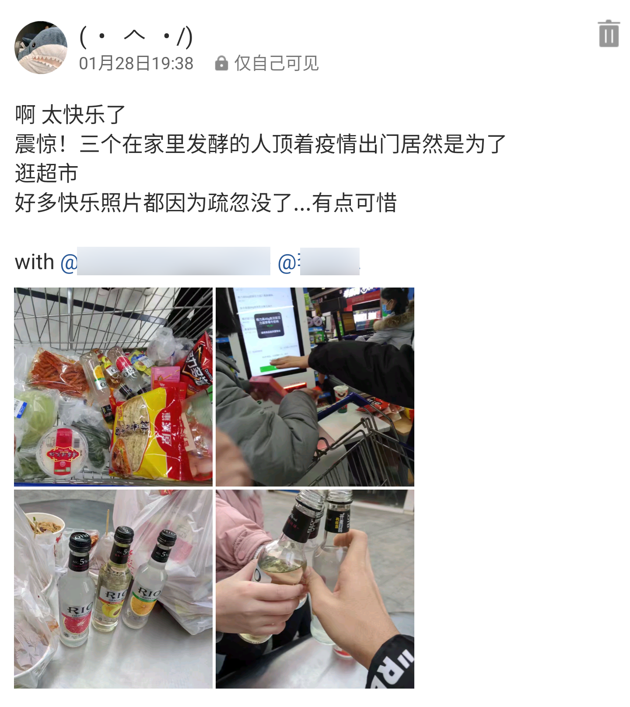
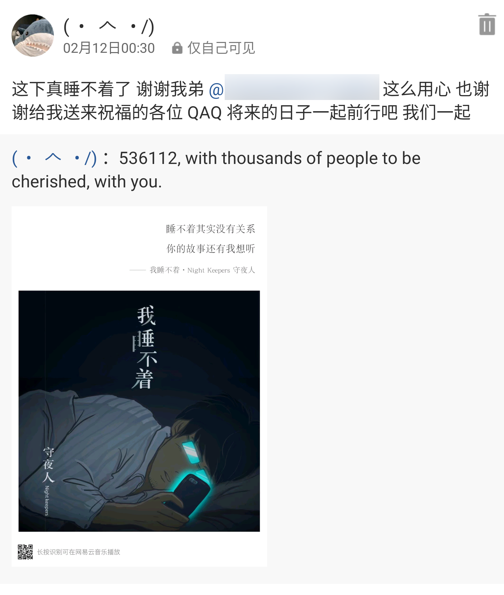
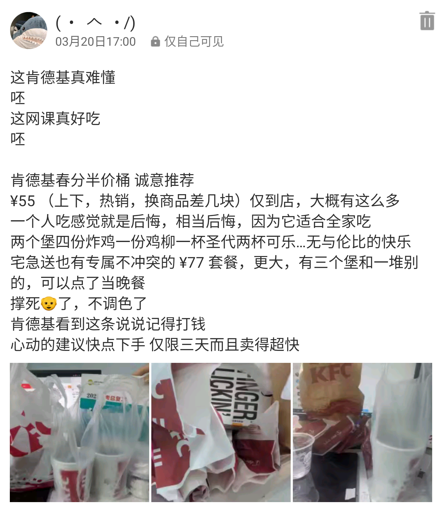
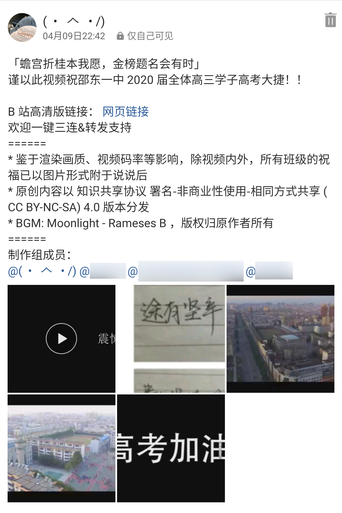
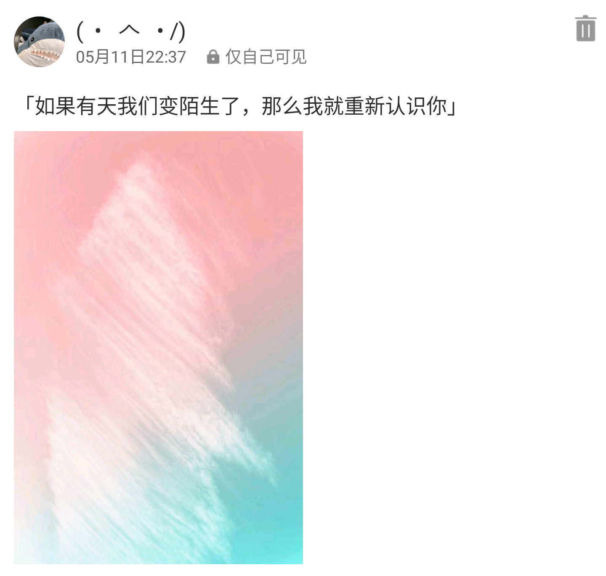
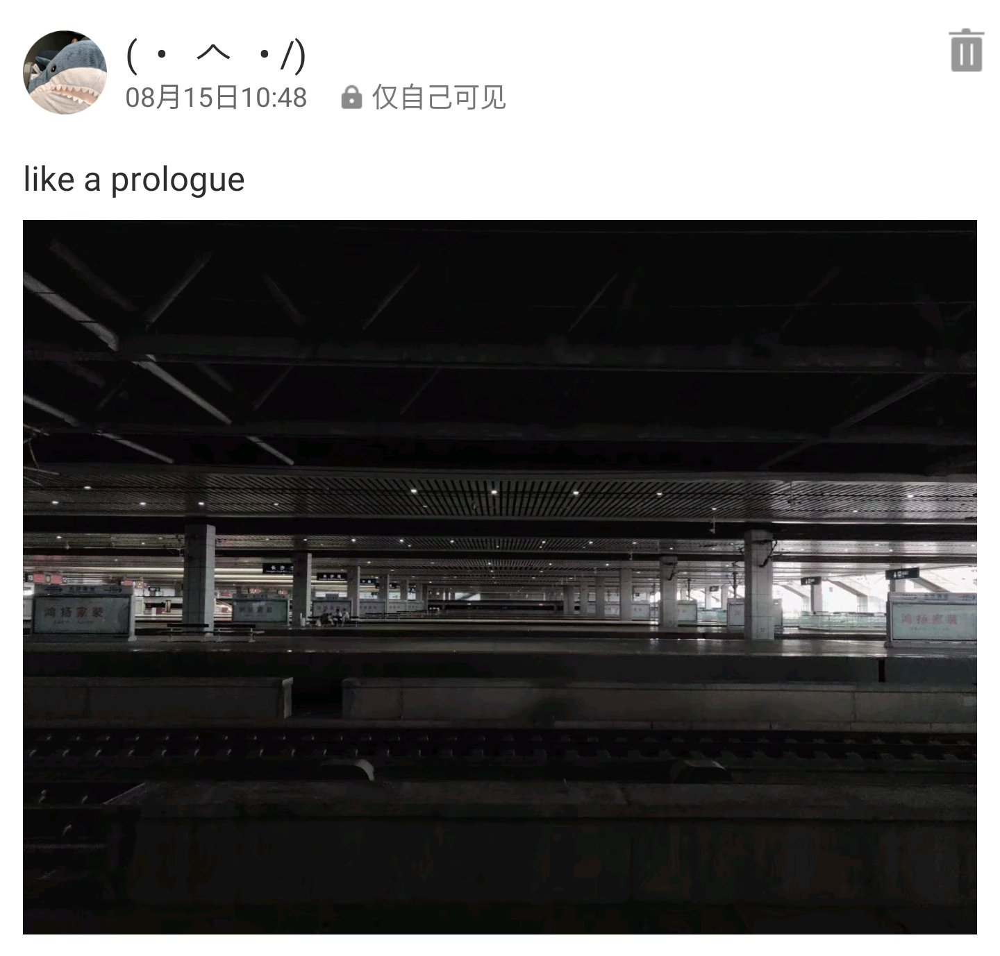
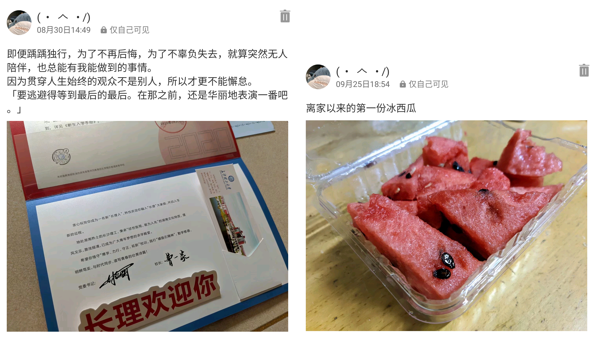
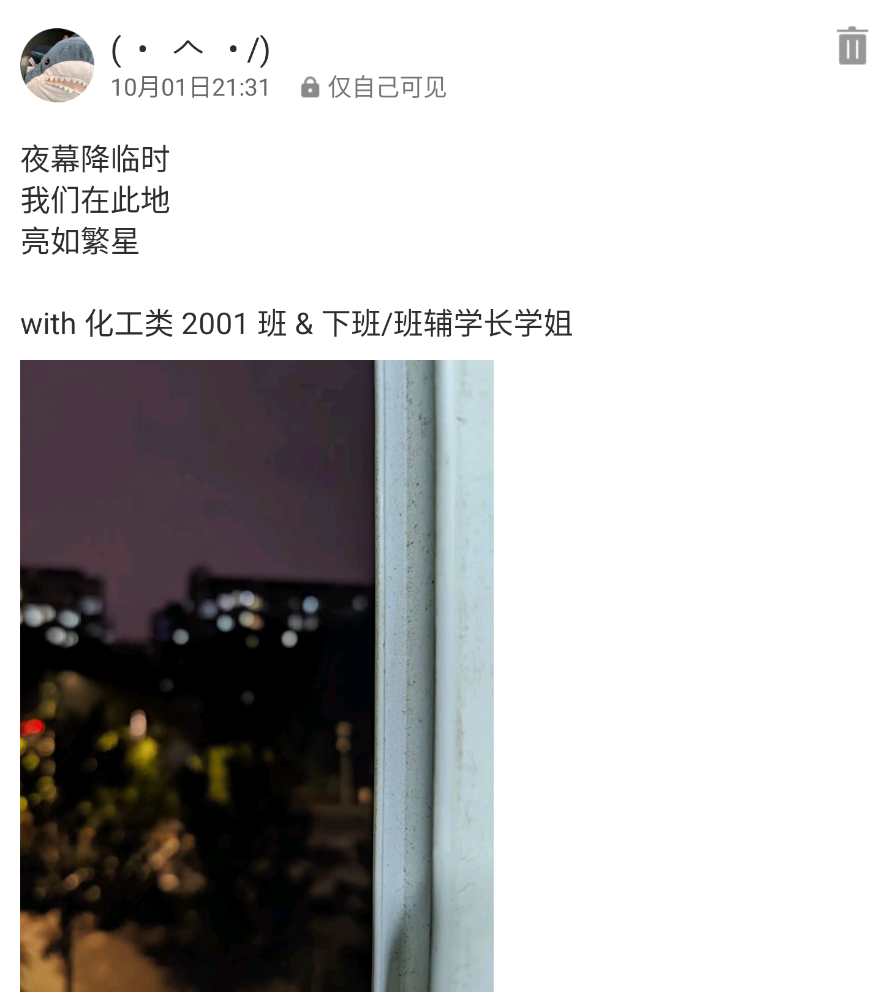
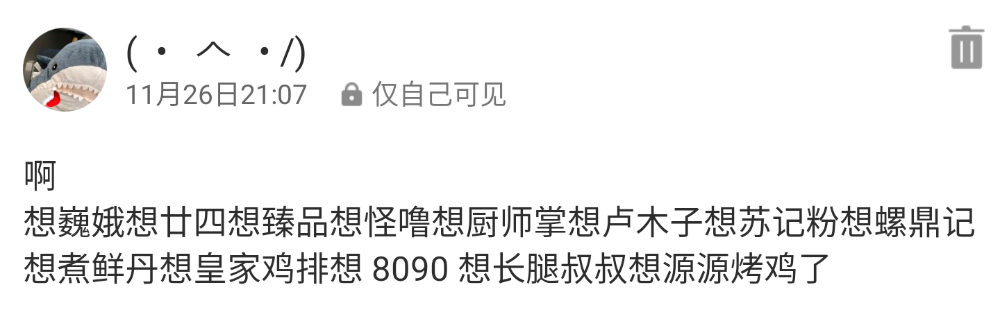
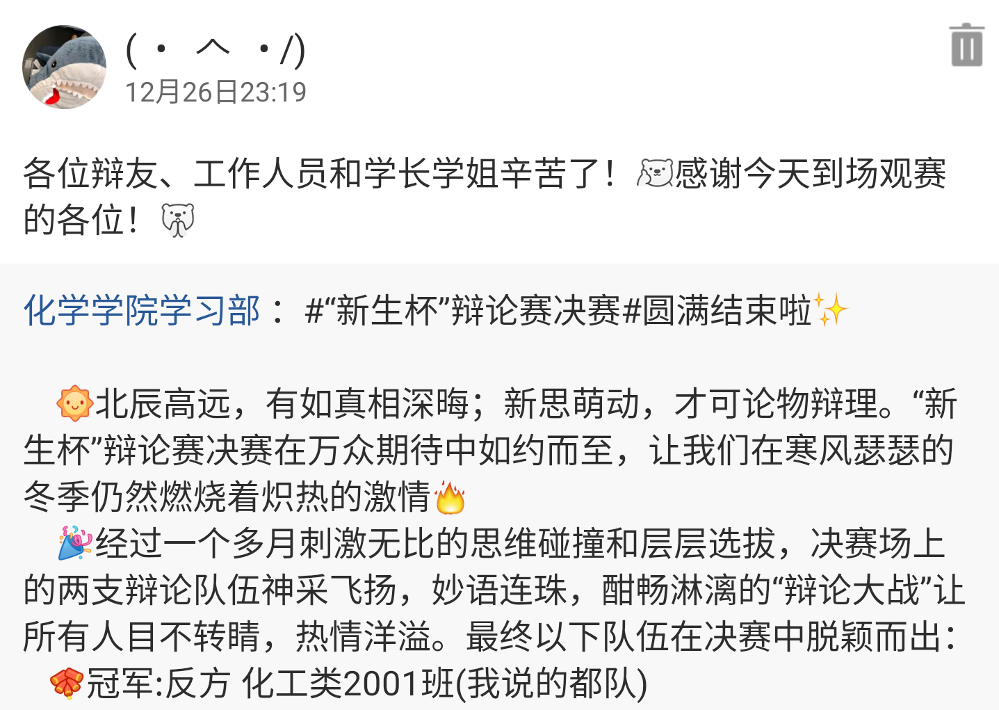

洒下光芒：2020 的追忆与展望
2020 这一年过得太慢，令人不快的事从未终结；2020 这一年过得太快，仿佛还没有开始便已经结束。
辞旧迎新前，我于此留下追忆与展望。
因为一些私人原因，今年的年度总结不会在博客首页上公开，内容和以往也将不同。正如标题所述，比起罗列过去一年的所见所闻所学，今年我更倾向于写下对过去一年那些难以忘怀的事的回顾，和一年将逝时的朝花夕拾。
过去一年，有落寞也有幸福，有深思也有轻浮。既然在读我的故事，那就听听我自己的描述吧。
本文长约 6000 字，全程带图，阅读约需 15 分钟。
一月 / 朝着自由的方向
为什么会变成这样呢……第一次大过年的给家里买菜，又有了一起买菜的人。两件快乐事情重合在一起……
作者被打死了，全文完。
已经过去快一年，大年初四那天的那些记忆至今仍在我眼前鲜活。我还记得在林林总总摆满了零食的货柜前，三人流连忘返；面对花花绿绿的蔬菜和水果，没体验过生活的人傻了眼；某个拐角，我和另一个同样拿着塞满糖果的魔法棒的人，一边对峙一边哈哈大笑。
当时疫情防控还没此后那般严格，大街上还有推着车的小贩，小城还没彻底封锁、失去生机。当时我们还没有网课，没有高考将至的紧张，还可以戴上口罩出门晃荡，还沉浸在过年的喜庆气氛中，尽管今年大不如前。
除此之外，懵懂无知的我，那一天第一次知道，原来真正打动人心的从来都不是海誓山盟，不是巧言令色。就像那天我看到的，一个人认真地挑选蔬菜，另一个人突然的 kiss 与充满宠溺的眼神，就已经甜得摄人心魄，尽管带着挥之不去的酸味。
我们那天大概也不会预料到，这样的快乐组合，居然有朝一日…
二月 / 灯影繁忙
536112×1000 = 17×365×24×3600.
这是长这么大以来过得最特殊的一个生日。今年没有亲友，没有开学，没有下课前五分钟产生的冲回家的渴望。今年有网课，有老 E 深夜直播的，在寂静无声的深夜让人感觉世界被抽离的 Outer Wilds，有一群让人此生不舍得忘记的人，作为明明第二天还要早起的高三学生，为向另一个高三学生送出祝福熬夜到凌晨。
在日月交接边际，我和闺蜜打着电话，等待着于我而言全新一年的到来。
「那我挂了去等了？」看着老 E 又一次没能挽救世界毁灭的我，在最后的几秒这样说道。
她听起来很疲惫：「去吧去吧，我去准备发说说，明早我再给你打电话过来。」
23:59 转进 00:00 的那一刻，相较往日还平平无奇。许久未见面、未联系却从未离开的朋友送来了祝福。我欣喜，也还在等，等一个闺蜜嘴里更特别更「走心」的时刻。
于是，00:17，往日的我在 QQ 空间里排开，和另外 8 张好几十个人发来的祝福拼出的长图组成九宫格，伴着闺蜜亲手敲出的数百字的回忆。我一张一张一条一条地读完，仿佛被抽离的世界又围在我身边，将我拥入怀中。从学弟到学长，从身旁到远方，我的半个人生在此时活了过来，带着此前从未有过的欣喜。有些片段洋洋洒洒，饱含真情的文字占据了两个屏幕的领土；有些片段言简意赅，一字一句锤进内心。
这是唯一一次有人特意为我向好几十个人求祝福，特意把所有图片剪下来贴在一起，特意整整推迟了一个小时的睡眠，亲手准点按下发送。我也是唯一一次收到如此特殊的生日礼物。尽管不记得如何与她相识，不记得她如何成为同龄人中与我关系最好的异性，但我知道这值得我珍藏一生。
三月 / 青空微凉
网课期间，学校、影院这类场所尚未开放时，大部分商家已投入「复工复产」，包括三月主角 KFC。万物解冻、复苏之际，KFC 推出了春分半价桶，以极其优惠的价格吸引了我和诸多因为网课被迫居家学习的学子。
那天，天朗气清，惠风和畅，翘了物理课跑到大街上的我，隔着口罩呼吸着自由，久违地肆意迈动着长了膘的双腿，径直奔向 KFC。一切都很美好，除了 TeamViewer 的服务器在国内体验实在不佳，让我顺带着物理课迟到，被班主任的短信贴心问候。疫情尚未得到良好控制的春分，或许是因为半价桶让人大呼真香，KFC 的人流量比预想的多了不少，不乏有顾客选择店内就餐。准备就着化学课吃炸鸡的高三学生一点都没闲着，套餐打包好一到手就叫车回家，赶上了化学课前的课间休息，避免了问候短信梅开二度。
如此优惠的套餐当然是选择向同学们宣传，所以就有了后续，「一个人带动起码八桶桶」。想来大家都憋坏了，该「真香」时争相「真香」，我也 因强大的业务能力荣幸 当了一次 KFC 的「自来水」、「产品推广大使（无偿）」。那天下午，按照居家学习课程表，该上生物课的时间，有人在买春分桶；该吃晚饭的时间，有人在买春分桶；该晚自习拍照打卡了，有人还准备跑去买春分桶。这大概就是网课期间高中学生们的真实写照：在那段充实、忙碌又像是一事无成的时光里，唯有混合了愉悦的自由感以及难得又弥足珍贵的休息，求之不得又不可或缺。
四月 / 征程与野望
…这样的快乐组合，居然有朝一日能代替学校做出让我们满心自豪的东西：以视频形式送给所有人的「加油」。
我们三个人（模拟联合国协会第四届
多亏了会务、副秘以及诸多往届学长学姐的努力，我们联系到了上届、上上届、上上上届和上上上上届的学长学姐，收获了满满的祝福。让每一届都有清北前辈撑场的梦想落空，也没联系到当年风光无限的省裸分状元；除开这两个小小的遗憾，我们已经拥有了来自五湖四海的支持与力量。
这段合作时光不算长，我们四个人感受到的「众人拾柴火焰高」的力量也不算弱。视频本身和模联无关，这么多志同道合还能一拍即合的朋友又确实是模联带给我的宝藏。碰巧近日从第五届副秘书长处得知，这个视频作为对 2021 届考生的激励，又出现在了一些班级的大屏幕上，这或许就是对我们的努力最大的肯定。
五月 / 增熵
完整地在学校度过的第一个月。
这个月的主题差点又被 KFC 占领，因为我们好不容易在儿童节前放一次假，又撞上了同样很「香」的儿童节桶。这次不比往昔，没能再次带动一波销售，否则本文会变成恰 KFC 的饭的模样也说不定。同样不比往昔的是，这一次我并非孤身一人，而是拉上了挚友为伴，在昭示着湖南入夏的暴雨到来前，享受着假期的最后几个小时。
六、七月 / 扬帆，不敢远航

出生以来经历的最大事件、决定自己前半生去向的关键、高中三年最大的焦虑来源：高考，来势汹汹、平淡无奇。
以前的我一直觉得高考能左右前程、改变命运，甚至决定一个人的一生，一直觉得高考是天大的坎，直到那一天我终于跨越它，到了更高的地方往回看才知道，没有任何东西能决定一个人的一生。
从不是「泰山压顶而面不改色」那类人的我在高考的前一天晚上，最后一次逛遍家乡最繁华的街道，在一直想去但总望而却步的寿司店大快朵颐，这回忆我今生难忘。不敢说我自己面对高考毫无压力，在高考的战役中我更算不上打了翻身仗。事实是，不管此前有多紧张害怕，以小时为单位的倒计时开始后，那都不再有意义。高考像是一次月考，和月考一样成绩揪心，一样时钟走得飞快，不一样的是考完后肩膀上少了三年的压力，却没有大喜大悲，只是突然很累，而内心平静似水，坦然迎接终结。
庆祝活动自然不会少，考完后我在三年从未有过的轻松中度过了这个月。与身边的人一起，仿佛从未活过，或是不再有明天般纵情歌舞。
当我回忆这一切时，我好像走了很远，可在直面它的那一瞬间，记忆中的光突然亮起的那一瞬间，恍惚瞥见自己经历过的每一个春夏和秋冬的那一瞬间，我才知道我从未出发。就像一场电影、一次旅途或一段悬而未决的感情到了终点一样，戛然而止，如梦初醒。不变的是生活，它依然以它不容置疑的节奏，裹挟着每一个人向前。
让人欣慰的是，我到现在还没有成为无趣的大人，还没有失去稚气与好奇，还在孜孜不倦地努力着保持本性。但是啊，如果我真的开始变成无趣的大人，我自己能意识到吗？如果我已经走得太远，我还能记得当初为了什么出发吗？我忍不住这样向自己发问，发现自己已经不知如何回答。
八月 / 序章
这是 8 月 15 日的长沙火车南站，我崭新旅程的出发点。独自出游也好，翱翔空天也好，很多个「第一次」像这样交汇，构成去重庆的前奏。
「没有问题的」，我这样告诉父母，这样告诉自己。在我终于得到允许，收拾行囊出发时，才知道不仅仅是「没有问题」。航班延误，我在候机室守在电脑旁不敢小睡；父亲陪着孩子扑在舷窗上看地面远去，我直勾勾地盯着舷窗发呆，直到再分不清黑夜与云彩；深夜抵达山城，一个人推着行李站在重庆北站外的天桥上望着不眠的人群来来往往，望着万家通明，不知去向何方。
孤独之外，独自出游给行程安排提供了最大限度的自由，让我能独自决定去哪，能做一些与人同行时做不到的事，例如面基。一天早上，在魔幻交通城市的魔幻重庆北站，二人见面之前，被「3 号口在哪」这个魔幻问题搞得头昏脑胀。
前一天晚上，Elepover：「我觉得地铁站某个出口可能是最靠谱的…那就重庆北站北广场 10 号线 3 号口吧。」
事实证明他是错的。
第二天我匆忙在楼下的面馆解决早餐，早早地赶往离住处不远的高铁站，准备静候高铁抵达——至少理想是这样的。现实是，我把整个站逛了个遍，然后发出了一声悲鸣：「完了，3 出口在哪？」
虽然我 EX 级的固有技能（指路痴）突然失效，意识到什么后跟了一句：「不对我好像是从 3 号口进来的…？我现在应该是在 3 出口的这个出口里面？现在走出去会不会很丢人啊」；对另一方而言就不一样了，因为接下来我收到的是：「我带你们打，我找不到三号口」。
坎坷的见面并没有浇灭我们的热情。那天，不久前还被太阳炙烤着的重庆难得地收敛，我们也藉此享受了几乎整个白昼，直到日落。
当然，这段旅途并非从此开始，亦非于此终止。与 QA 在观音桥度过的半个晚上，同另一位网友首度探访的吉野家和 maimai 在让人难忘上同样不遑多让。感谢他们的陪伴与大度，这次旅途的目的成为了面基，原本没有计划的出行填满了欢喜，本文也忠实地记录了回忆。
九月 / 我爱着落日那一方
思乡是逃不掉的指控。
军训期间的时间很紧迫，每天大清早爬起来随便买点东西开启一个上午的训练，中午匆匆忙忙吃过午饭小睡一段，有时连外腰带都没有解开，一个小时的晚餐时间结束后还要训练到至少九点。即使强度已远不及往年，只是这样就已经让我身心俱疲。
生活没有给人喘息的间隔，我也不习惯在他人面前表露感情。感情被有意无意地压抑时，与人一边聊着生活一边望着平静的湖水和星空，总会想到未来，想到以往，想到不知还能回几次的家，想到走过无数次的回家路，想到或许再难踏上同一寸土地，想到故乡的风与云，想到仰起头就能看到的高悬的明月，想到矮小得难以被称为山的土丘与永远那般湛蓝的天空，想到从小到大在故乡度过的夏天，和那些夏天里家人永远会给我买的、一成不变的冰西瓜。
人总要前行。和难以忘怀的挚友分别，就像回到了高中的那些秋日。小心包装好易碎的情绪，抹平湖水泛起的波痕，重新握住开启未来与机遇之门的钥匙，心知至少这次不是独自出发。
十月 / 若能触及秋霜
完整地在新学校度过的第一个月。
国庆晚会玩得很开心，没有假期很遗憾，看着挚友回家住了一周很羡慕；尽管如此，如若愿意，只是在我能抵达的大街小巷，偶尔也能发现许多不一样的东西。某栋楼的侧面就像巍然矗立的鸟居，或者窗前某个转角洒下的阳光照出似曾相识的密林，哪怕只是一瞬间，也足以让人怦然心动。
这个月，我最大的变化大概是开始学着整理、照顾自己。军训结束后，生活照常进行，该经历的都要经历。就像《阿甘正传》里阿甘说的巧克力，你永远不知道下一颗是什么味道，但你总有一天会把它们吃完。
日复一日，太阳照常升起。
十一月 / 于回忆徜徉
我最终没能每天都跑去此前提到的那家粉店嗦一碗粉。
一方面是这家店在食堂二楼，而且开店时间还比较晚，对几乎每天第一节课都有课的人实在不友好；另一方面更大的问题是，即使外观再像，我也无法接受这就是我家乡的味道。说粗不及邵阳粗粉，说细它比邵东粗粉还粗；口感像是圆形的长沙粉，几乎吹弹可破；以及我真的无法接受这么厚的大块牛肉就这样躺在米粉上，虽然这牛肉味道还不错。
我记得的家乡菜，是蒸熟的尖椒拌入皮蛋，用擂钵糅合；是热气腾腾的挂面，淋上热气腾腾的炒酱；是猪前腿花肉细细剁成刚好的肉糜，裹进炸得刚好的蛋皮里；是在乡下随处可见的时令蔬菜，炒出独一无二的乡愁。我记得的家乡店，是挂着红油的大片牛肉，是三年来吃过无数次的意大利面和咖喱鸡排饭，是我暑假一坐一下午时陪着我的冻柠红茶或黑砖牛乳茶，是少辣吓人中辣吓人魔鬼辣吓死人却又让人欲罢不能的巍娥烧烤，是浮着一层红油吃完浑身冒汗的、从未缺席过我稀少假期的螺蛳粉。
某一天晚上，当我整理照片时突然发现，每一种味道都承载着特有的回忆。抱着这些回忆，我决计去相同的地方感受相同的味蕾体验，无数次地再度踏上那一寸土地。
十二月 / 将过往雪藏
如果要说有什么最能让一个人进步的话，那就是挑战自己吧。
高中那场「校园说」，我是个从来没正经打过辩论的萌新，光凭一腔热血就冲了上去，然后头破血流；大学这场「新生杯」，我还是个几乎没正经打过辩论的萌新，还是光凭一腔热血就把自己填进了名单。过程不尽如人意，也占用了很多时间，但结果已足够让我为我们的队伍自豪。
作为
我不认为我是个合格的队长，不认为我是个合格的辩手，我只有一件事做得问心无愧，那就是从未退缩。全程，我和辩手们几度想要放弃，却坚持到了最后；半决赛，我们原四辩由于个人原因无法参与，我顶了上去，还顺便拿了次最佳辩手；决赛，我甚至以为我们已经败给了对面，直到像是乌龙的结果被公之于众；无机化学，我终究不用明年再战。
然后，是繁华落尽、喧嚣落幕后的平静。
两年前，我在会场上不打稿子就说不出话，更抓不住讨论的重心，面对信息量过大的场景就像是走马观花。两年后，我已经能在短时间内发现对方的逻辑纰漏，迅速站起来批驳，侃侃而谈。我从未知道我有这种进步，直到我坐上四辩席，直到我被迫放下过往，开始探索全新的世界。
Finale，如果这样
记录我自己听起来很简单，但从这 12 个月的回忆里抽出最具代表性的一部分再从自己的角度加以描述，实际做起来也不轻松。有这个想法大概是在上次年度总结写完之后，实际付诸行动距那已经过了近一整年。这一年里发生了很多，我也经历了很多，感谢各位看官与我一起，用不同以往的方式，将我留下太多遗憾又倍感幸福的 2020 重新活了一遍。
未来的路还很长，明年又会以什么姿态看待自己、过去和未来呢？我不知道，或许各位可以与我一起期待。